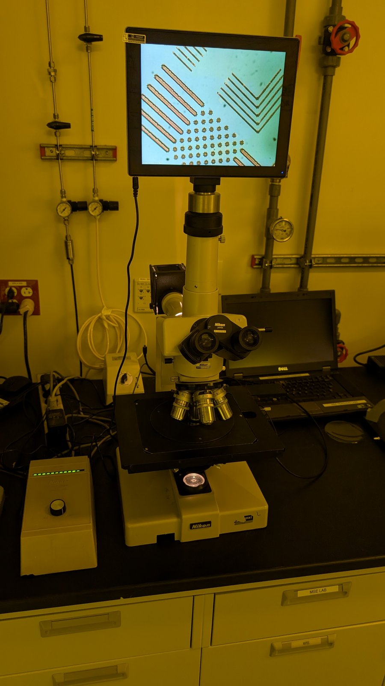
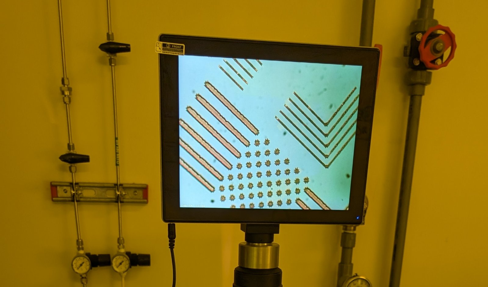

Summer Processing Lab: Week 2 (6/9)
This lab session focused exclusively on the different types of photoresist, the characteristics that determine the thickness of a spin coating, and the proper procedure for exposure with the Karl Suss 505 Mask Aligner. We practiced focusing and spinning throughout this session.
We are using AV1512 photoresist, which works well due to its low viscosity, giving an estimated 1.2 μm coating after spinning @ 4000 rpm for 60 seconds. Our largest features are massive compared to what this aligner is capable of, measuring in at 100 μm, but I wanted to see how what feature resolution we are capable of with the resolution mask.
Our best run was a bit disappointing, reaching only ~5 μm precision. Lines were cleanly resolved, but dot matrices were lost at or below 3 μm. Focal issues seemed to be a consistent issue, likely due to only achieving soft contact between the mask and wafer.

